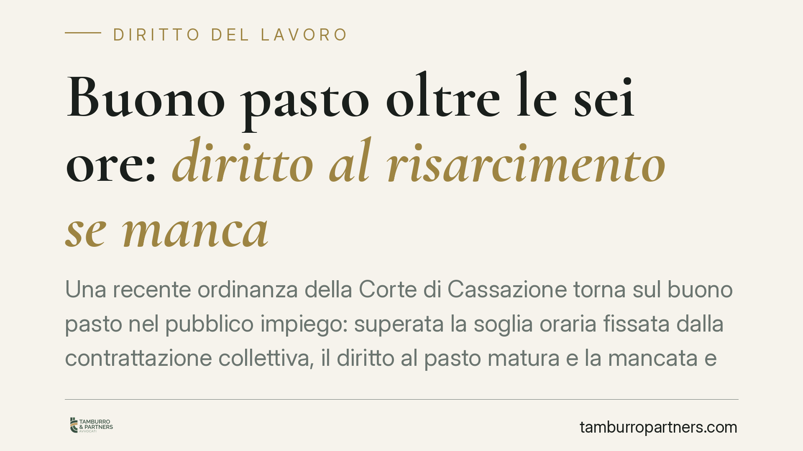

Buono pasto oltre le sei ore: diritto al risarcimento se manca
Una recente ordinanza della Corte di Cassazione torna sul buono pasto nel pubblico impiego: superata la soglia oraria fissata dalla contrattazione collettiva, il diritto al pasto matura e la mancata erogazione può generare un risarcimento. Resta libera, però, la scelta del datore sulle modalità: mensa, buono o convenzione. Vediamo perché la distinzione conta.

Il caso
Un lavoratore del comparto sanitario chiede il riconoscimento del buono pasto per i turni che superavano la soglia oraria prevista dalla contrattazione collettiva. L'azienda ospedaliera resiste. La Cassazione conferma un orientamento ormai assestato: quando la prestazione supera la durata fissata dal CCNL applicabile, il diritto al pasto matura, e la sua mancata erogazione può fondare una pretesa risarcitoria.
Il punto non è nuovo, ma la pronuncia è utile perché ribadisce un confine spesso frainteso: il *se* del diritto non si confonde con il *come* dell'erogazione.
Inquadramento: un istituto di fonte contrattuale
Il buono pasto non è previsto da una norma di legge generale valida per tutti i rapporti di lavoro. È un istituto di fonte contrattuale: nasce dalla contrattazione collettiva, nazionale o integrativa, che ne definisce presupposti, soglia oraria e valore.
Nel comparto Sanità, come in altri comparti del pubblico impiego, i CCNL collegano il diritto al pasto al superamento di una determinata durata della prestazione giornaliera (tipicamente oltre le sei ore, con articolazione del turno che comprende la pausa). È quella clausola contrattuale — non una disposizione del codice civile — a costituire la base del diritto. Chi vuole farlo valere deve quindi individuare il CCNL applicabile, la sua versione vigente all'epoca dei fatti e la specifica previsione sull'orario.
La Cassazione, su questa base, ribadisce due profili.
Primo: la modalità di erogazione resta una scelta imprenditoriale. Il datore non è obbligato ad allestire una mensa fisica; può optare per il buono pasto, per una convenzione con esercizi esterni o per altra soluzione equivalente. Ciò che non può fare è negare del tutto la prestazione quando i presupposti contrattuali si sono verificati.
Secondo: la flessibilità organizzativa non azzera la prestazione dovuta. L'assenza di una mensa non estingue il diritto; semmai impone al datore di individuare una forma alternativa di adempimento. In difetto, la prestazione omessa si traduce in un danno patrimoniale risarcibile.
Implicazioni pratiche
Per il lavoratore, il profilo più delicato è di natura probatoria e temporale.
Sul piano probatorio, occorre dimostrare il superamento concreto della soglia oraria nei singoli turni: fogli presenze, cartellini, ordini di servizio. Non basta allegare l'esistenza del diritto in astratto.
Sul piano temporale, va considerata la prescrizione. Dopo l'intervento delle Sezioni Unite (Cass. SU n. 26246/2018) e la giurisprudenza successiva al Jobs Act, per i rapporti privi di tutela reale contro il licenziamento la prescrizione dei crediti retributivi non decorre in costanza di rapporto, ma dalla sua cessazione. Il regime applicabile dipende quindi dal tipo di rapporto e dalla stabilità del posto: è un accertamento da condurre caso per caso, non una regola unica.
Per il datore, la pronuncia conferma che la libertà sul *come* non copre il *se*. Chi gestisce turnazioni superiori alla soglia contrattuale senza prevedere alcuna forma di pasto espone l'ente a un contenzioso dal fondamento solido.
Cosa fare in concreto
- Individuate il CCNL applicabile e la clausola specifica che collega il diritto al pasto alla soglia oraria, nella versione vigente all'epoca dei turni contestati.
- Ricostruite i turni effettivi con documentazione oggettiva: cartellini, fogli presenze, ordini di servizio. La pretesa si regge sulla prova del superamento della soglia.
- Verificate la decorrenza della prescrizione alla luce del tipo di rapporto e del regime di tutela applicabile: la data da cui computare i termini può variare.
- Datori di lavoro: mappate le turnazioni che superano la soglia e accertate che a ciascuna corrisponda una forma di erogazione (buono, mensa o convenzione).
- Formalizzate la richiesta per iscritto prima di avviare un'azione: un sollecito documentato chiarisce la posizione e incide sui termini.
Il principio
La libertà organizzativa del datore è reale ma non illimitata. Può scegliere come far pranzare chi lavora oltre la soglia; non può decidere che non pranzi affatto. È la differenza tra organizzare una prestazione e sopprimerla.
---
*Contributo informativo a cura di Tamburro & Partners - Avv. Giuseppe Tamburro. Non costituisce parere legale.*
Ogni storia di lavoro ha i suoi tempi.
Se gestisci HR e vuoi un confronto su contenzioso, ispezioni o licenziamenti, scrivi allo studio. Ti rispondiamo entro un giorno lavorativo.